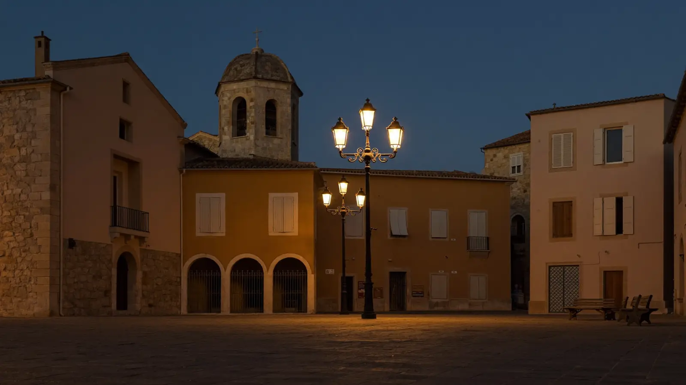
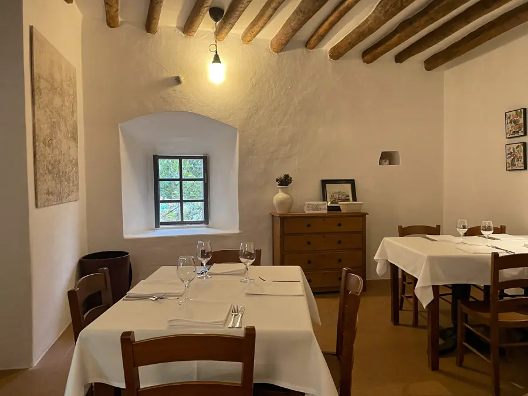
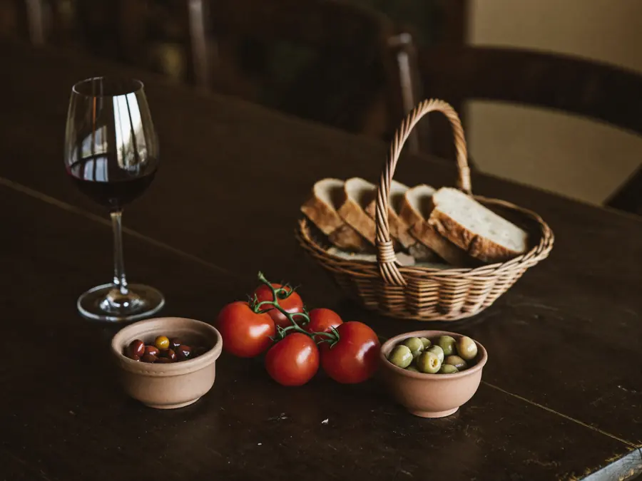
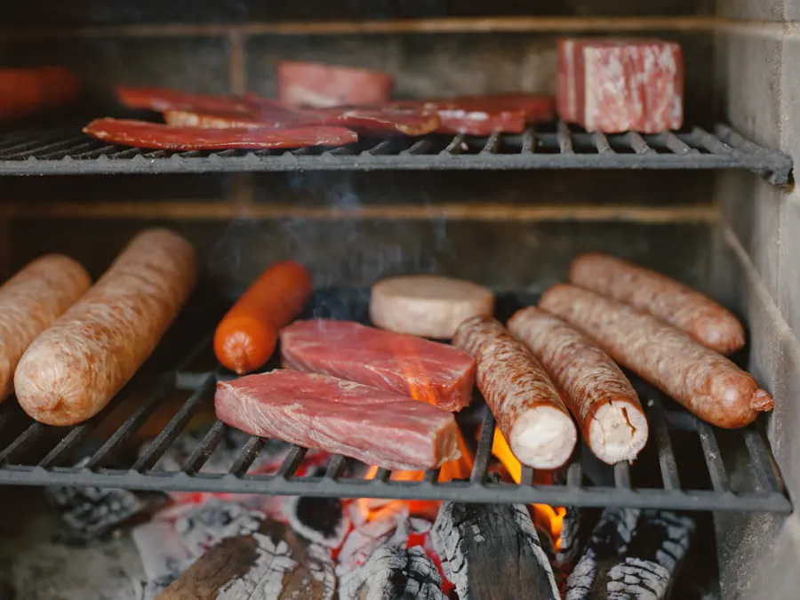
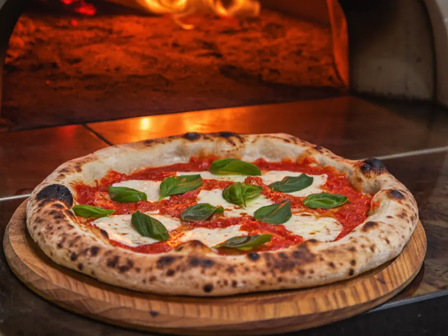
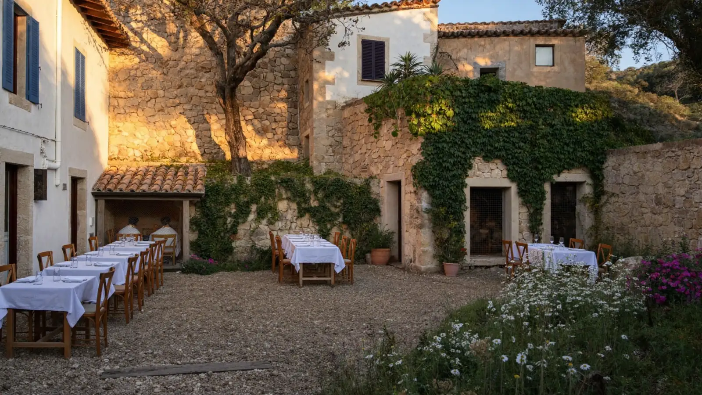

Plaça Major · Sant Pere Pescador
Brasa, horno de pizzas y pescado de la bahía, en la plaza del pueblo. Con terraza en la plaza y un patio con animales para los niños.

La casa
Can Trona está en la Plaça Major de Sant Pere Pescador, con un 8,6 sobre 10 en Guiacat. Estar en la plaza mayor de un pueblo no es una dirección cualquiera: es el sitio por donde pasa todo el mundo y donde la gente queda sin tener que explicar dónde.

Restaurante de pueblo, de los de toda la vida.

Pan, aceite y producto de la tierra. Lo de siempre, bien hecho.
La carta
La carta es ancha a propósito: ensaladas y entrantes fríos y calientes, carne a la brasa, pescado fresco de la bahía de Roses y pastas y pizzas artesanas. Es de esas casas donde puede venir una mesa de ocho y que nadie tenga que conformarse: el que quiere brasa, brasa; el crío que solo quiere pizza, pizza hecha aquí.

Carne al carbón, del derecho. Y pescado de la bahía de Roses.

Hechas en casa. Lo que salva cualquier mesa con niños.
El patio
En verano se come fuera: en la terraza de la plaza, que es la de toda la vida, o en el patio de dentro, más tranquilo, donde hay unos cuantos animales. Para una familia con niños eso lo cambia todo — los críos se levantan, van a verlos, y los mayores acaban el café sentados.

Quien busca dónde comer en Sant Pere y no conoce el pueblo no llega a la plaza por internet: llega andando, si pasa por delante. Un sitio propio en la red es lo que hace que también llegue el que todavía está decidiendo desde el coche.
Cómo llegar
En la Plaça Major de Sant Pere Pescador. Para reservar, mejor llamar.
Llamar ahora Abrir en MapsPreguntas frecuentes
En la Plaça Major, en el centro de Sant Pere Pescador.
Sí. Hay pastas y pizzas artesanas, y un patio con animales donde los críos se entretienen.
Sí, en verano: la terraza de la plaza y el patio de dentro, más tranquilo.
Ensaladas y entrantes fríos y calientes, carne a la brasa, pescado fresco de la bahía de Roses, y pastas y pizzas artesanas.
Llamando al 972 52 00 34.
Un 8,6 sobre 10 en Guiacat.